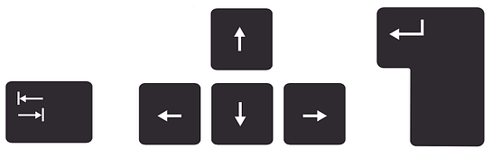

Помощь к модулю рассчета параметров для железнодорожного переезда,
пешеходного перехода, оповещения монтеров пути, САУТ
Навигация по ячейкам:

Входные данные:
- Время извещения — расчётное время, которое гарантирует достаточный период времени,
в течении которого закроется переезд или закроется пешеходный переход, или монтёры пути покинут рабочую зону.
-
Ширина объекта — характеристика объекта, которая задаётся при необходимости, когда
ордината/пикет указываются от центра объекта, однако извещение необходимо рассчитывать от его края(например переезд).
- Пикет объекта, ордината объекта — это линейная координата объекта.
- Начальная скорость — это скорость состава от предполагаемой точки подачи извещения.
Если рассчитывается режим трогания с места, тогда скорость равно 0.
- Пикет/ордината точки отсчёта — это линейная координата точек(точки подключения датчиков
проследования, светофоры, остряки стрелок), выбранных пользователем
либо из-за предполагаемой достаточности длины участка извещения, либо из-за изменения
максимальной скорости движения состава начиная от данной точки.
- Максимальная скорость от точки — это ограничительная максимальная скорость состава,
которую он может достичь, при следовании от заданной точки.
Выходные данные:
- Длина участка извещения расчётная — это расчётная длина, которая определяется при
заданных пользователем точках участков отсчёта, начальной скорости, а также максимальных
скоростях от точек отсчёта.
- Длина участка извещения фактическая — это длина от точки подачи извещения до объекта,
с учётом ширины объекта при необходимости.
- Время извещения фактическое — это время следования состава от точки подачи извещения
до объекта, с учётом ширины объекта при необходимости.
- Задержка извещения расчётная — это лишнее время подачи извещения. В течении этого
времени можно не подавать извещение на объект.
- Расстояние от объекта до светофора — это расстояние от точки подачи извещения до объекта,
с учётом ширины объекта при необходимости. Рассчитывается при режиме трогания с места.
- Время движения при трогании с места — это время следования состава от точки подачи извещения
до объекта, с учётом ширины объекта при необходимости. Рассчитывается при режиме трогания с места.
- Задержка открытия светофора расчётная — это время в течении которого необходимо обеспечить
ограждения объекта, когда время движения при трогании с места меньше требуемого времени извещения.